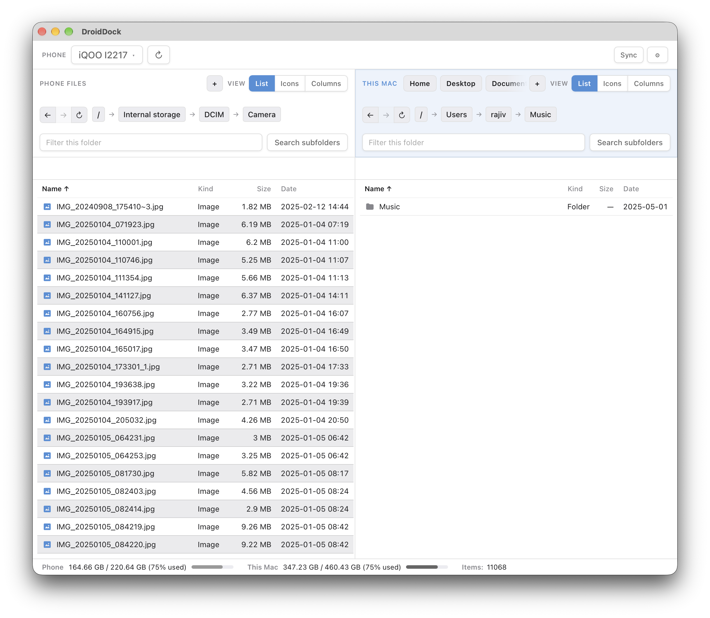
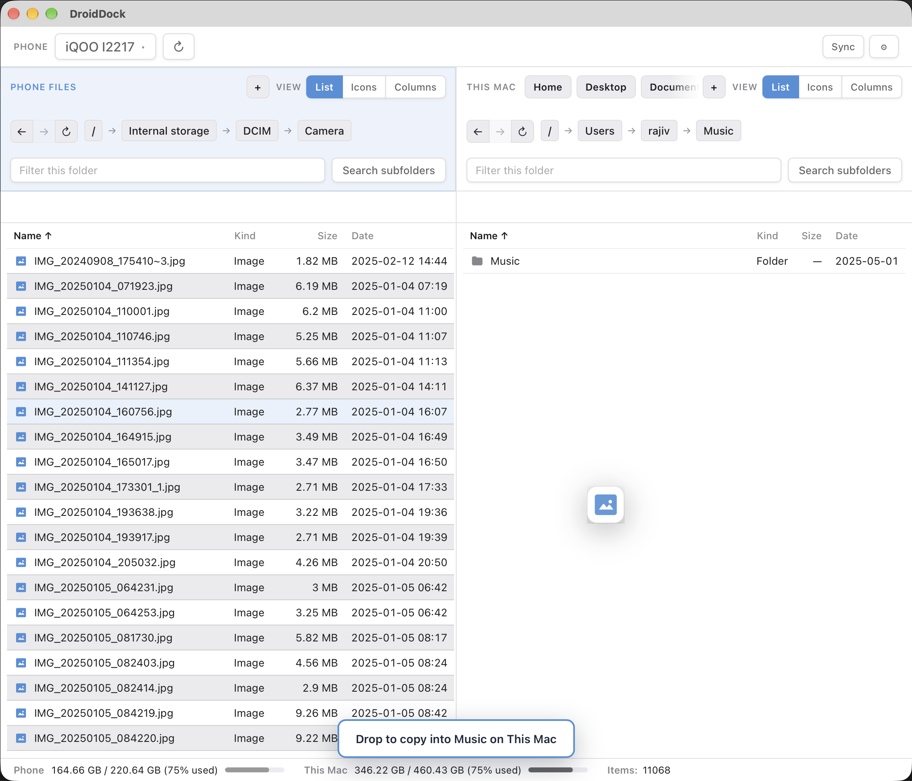

What's New in v0.7.0
DroidDock now opens your phone and your Mac in one window, and a copy goes either way.
Thanks to PROSKEY for the phone-and-Mac window, copy either way, the transfer queue, and the setup and USB debugging screens.
Phone and This Mac, Side by Side
Drag between the two sides, use Cmd + C then Cmd + V, press Cmd + D, or drop a file from Finder onto the phone side.
Transfer Queue
Per-file progress with pause, cancel, and retry. When a name already exists, choose skip, replace, keep both, or ask each time. A replace keeps the original until the new copy finishes.
One-Click Setup
No adb on your Mac? DroidDock downloads Google's platform-tools, checks them against a pinned checksum, and keeps them in its own folder. No Homebrew, no password. An adb you already have is used first.
USB Debugging Help and a Quick Tour
With no phone connected, pick your phone's brand and software version to see the steps. A one-time tour walks through the two sides, and you can reopen it from Settings.
Safer Copies and Sync
- A copy cut short, for example if adb is killed, no longer replaces a good file with a partial one
- If the phone is unplugged during a sync scan, sync stops instead of planning deletes from a half-finished list
- Sync ignores DroidDock's in-progress temp files
- A file name containing "Cancelled" no longer stops the whole queue
- Symlinked folders open on This Mac, and big folders no longer freeze the window
Heads-up
- Delete now goes up a folder. It never removes files, and
Cmd + Deleteno longer deletes on the phone. Use Delete on the file menu or the selection bar. - The layout and several shortcuts changed with the redesign.
Cmd + /lists them.
Screenshots
One click installs Google’s adb tool. No password, no Homebrew.

Phone and This Mac, side by side. The shaded side is the active one.

Drag between the two sides to copy either way.

Download
macOS 10.15+ • Universal Binary (Apple Silicon + Intel)
Or install via Homebrew:
brew tap rajivm1991/droiddock && brew install --cask droiddock
Full Changelog
v0.7.0 - November 2026
Added
- Phone and This Mac open together, with copy either way by drag, Cmd+C and Cmd+V, Cmd+D, or a Finder drop onto the phone side
- Transfer queue with pause, cancel, and retry, and skip, replace, keep both, or ask each time on a name clash
- One-click adb setup that downloads Google's platform-tools and checks them, with no Homebrew or password
- USB debugging steps by phone brand and software version, and a one-time tour
- Place marks, back and forward on each side, filter and search subfolders, and rename from the selection bar
- Thumbnails on This Mac, a larger Icons zoom, New folder on either side, and a choice of phone start folder
- Keyboard: Ctrl+Tab switches sides, Cmd+[ and Cmd+] go back and forward, and Columns keys work like Finder
- A one-time "provided as is" notice on first launch
Changed
- Delete goes to the parent folder, and Cmd+Delete no longer deletes on the phone
- The top bar has the phone picker, Look for phones, Sync, and Settings, and each side has its own view buttons
- List sorts from the Name, Size, and Date headers, and the status bar has separate phone and Mac meters
- Removed the unused update plugin
Fixed
- A killed adb transfer no longer replaces a good file with a partial one
- An interrupted sync scan stops instead of planning deletes from a half-finished list
- Sync ignores in-progress temp files
- File names containing "Cancelled" no longer stop the queue
- Symlinked folders open on This Mac, and big folders no longer freeze the window
- Plus fixes to phone search previews, rename in Columns and Icons, the emulated breadcrumb, Columns scrolling, the Allow access prompt, and more
Support the Developer
DroidDock is free and open-source, built by one developer in their spare time. If it saves you time, a coffee means a lot!
☕ Buy me a coffee